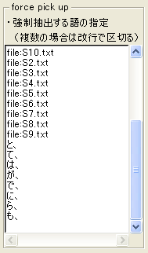
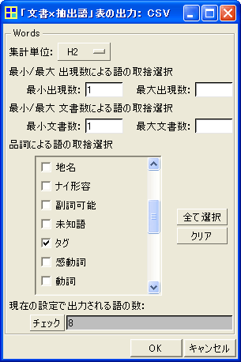
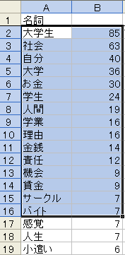
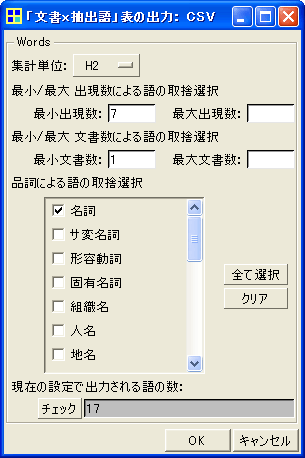
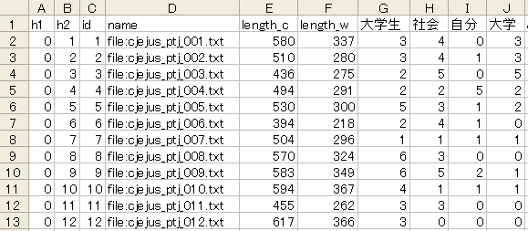
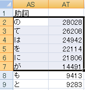
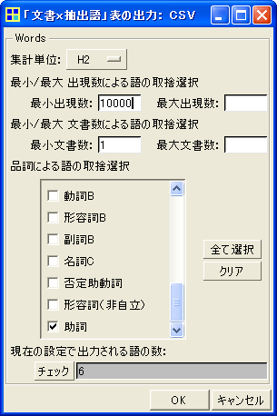

始める前の準備
他の分析を始める前に第5章の「練習問題」を行い、ファイルの結合＆登録の手順を確認しておかれることをお勧めいたします。
※以下の準備はKH Coder 2.beta.25以降では不要になりました：
下記のZipファイルをダウンロードして解凍して下さい。そして、Zip内に含まれているファイルを、kh_coder.exeと同じ場所にある「plugin」フォルダの中にコピーして下さい。
kuroshio_plugin.zip (2010 12/12)
第5章の「練習問題」（p. 136）
■1. はじめに
20個のテキストファイルを選んで分析するという練習問題ですが、KH Coderは基本的に複数ファイルの分析には対応していません。そのため、そのまま実行すると、「プロジェクトの登録→前処理→集計結果をExcelにコピー」という一連の作業を20回繰り返すという、やや魅力に欠ける作業手順となってしまいます。
KH Coderの仕様においては、「関連があるテキストデータはすべて1つのファイル内にまとめられている」ことを前提にしています。したがってKH Coderで分析を行う前に、20個のファイルを適切な形で1つのファイルに結合すれば良いのです。そうすれば、見違えるほど効率的な分析手順になるはずです。
■2. ファイルの結合
デスクトップ（またはその他の分かりやすい場所に）に新しいフォルダを作成して下さい。名前はなんでも構いません。そのフォルダの中に、自分が選んだ20個のテキストファイルをコピーします。
KH Coderを起動してメニューから「ツール」「プラグイン」「データ準備」「テキストファイルの結合」を実行します。下図の画面が開くので、「フォルダ:」の箇所で先程のフォルダを指定します。「参照」ボタンをクリックして選んでも構いませんし、白い入力欄にフォルダをドラッグ＆ドロップしても構いません。
フォルダを指定したら、その他のオプションは変更せずに「OK」をクリックします。すると「名前を付けて保存」画面が開くので、ファイル名を決めて下さい。これで結合は完了です。仮に「結合.txt」という名前で保存したとすると、同じ場所に「結合_names.txt」というファイルが別途保存されます。こちらのファイルも後で使います。
以上の操作によって、フォルダ内のすべてのファイルが結合されました。それぞれのファイルの内容が始まる前には「<h2>file:ファイル名</h2>」という見出しが付いています。この見出しがあるので、結合前の各ファイルの内容を、KH Coderは別個の「文書」として認識します。見出しのおかげで、1つのファイルに結合してしまっても、別々の「文書」として扱えるのです。より正確には、h2見出しで区切られているので、「h2単位の文書」と認識されます。
■3. 結合したファイルの登録
仮に「結合.txt」という名前で保存したとします。この「結合.txt」を新規プロジェクトの「分析対象ファイル」としてKH Coderに登録します。メニューから「プロジェクト」「新規」です。そして、メニューから「前処理」「分析対象ファイルのチェック」を行います。もし何か問題が見つかった場合は、自動修正の「実行」ボタンをクリックします。ここまでは通常のプロジェクトの登録と同じです。
次に、メニューから「前処理」「語の取捨選択」画面を開きます。そして、「強制抽出する語の指定」「使用しない語の指定」の両方の入力欄に、「結合_names.txt」をドラッグ＆ドロップして下さい。下図のように、内容が貼り付けられたのを確認して「OK」をクリックします。この操作によって、見出し部分が語としてカウントされず、分析上は「無いもの」として扱われるようになります。
以上の設定を行ってから、メニューより「前処理」「前処理の実行」をして下さい。
■4. 分析のための操作
もともと20個のファイルに入っていた内容を、KH Coderは20個の「h2単位の文書」として認識しています。あとは、それぞれの文書の総語数・異なり語数を出せば、「練習問題」に取り組むことができます。
各文書の総語数・異なり語数を出力する機能は、既製の機能としてはKH Coderに備わっていません。ですが、SQL文を入力すれば集計を行えます。メニューから「ツール」「SQL文の実行」をクリックします。画面上部のEntry欄に、以下のSQL文を貼り付けて、「実行」をクリックして下さい。
以下のように結果が表示されます。「n_total」が総語数、「n_types」が異なり語数です。一番左の「h2_id」は文書のIDです。結合ファイルの1つ目の文書がID「1」、2つ目の文書がID「2」というふうに、結合ファイル内の順番でID番号が振られています。Result欄の結果を選択して「コピー」ボタンをクリックし、Excelに貼り付ければ、あとはExcel上での計算で目的を達成できます。
※KH Coderは形態素解析の結果をMySQLデータベースに格納しています。そのため、あらかじめ既製の機能として備わっていなくとも、SQL文を入力することで、様々な集計を行うことができます。もし、ご自身でSQL文を書いてみようとお考えの方は、KH Coderのリファレンスマニュアル4.2節でテーブル構造をご確認下さい。
今回は30個のファイルの分析です。新しいフォルダを作って、当該の30個のファイルをその中にコピーしましょう。そして 第5章の「練習問題」（p. 136）と同様に 、「2. ファイルの結合」「3. 結合したファイルの登録」「4. 分析のための操作」を行います。その結果をExcelに貼り付けておいて下さい。後で、1000語あたりの調整頻度を求めるために、総語数（n_total）を使います。
次に、以下のSQLを実行することで、「主要品詞頻度表」を作成します。
表頭の品詞名がローマ字になっていますが、「主要品詞頻度表」が得られました。これをExcelに貼り付け、最初に求めた各文書の総語数で割ってから1000をかけると、p. 133の表2が得られます。あとはExcel上での統計分析で完了です。
※書籍本文での「p_01」「p_02」といったファイルの番号付けと、CD-ROM内のファイル番号は一致していないようです。したがって、書籍本文と似た結果にはなりますが、まったく同じ分析結果は得られません。ちなみに、書籍本文での「p_02」がCD-ROM内の「cjejus_ptj_005」にあたるようです。こうした対応関係をすべて洗い出せば、書籍本文とまったく同じ分析結果を出すこともできるでしょう。
第6章の「練習問題」（p. 161）
ここでは青空文庫から20作品をダウンロードして、以下のようなクリーニングを行いました。ファイルの冒頭と末尾に付いている説明・日付を削除しましたが、冒頭の作品タイトルと著者名は残しました。そして、テキストエディタ「秀丸」の正規表現を用いた置換機能で、以下の正規表現を空の文字列に置換しました。ルビ・注釈に加えて、見出しをインデントするための全角スペースを削除しています。
その後、「〔」を検索してアクセントの除去を個別に行いました。またアルファベット（[a-z,\.]）と日本語文字（[^\x01-\x7E]）の間に挿入されている半角スペースについても除去しました。以上でクリーニングは完了です。
今回は20個のファイルの分析です。第5章の「練習問題」の「2. ファイルの結合」「3. 結合したファイルの登録」と同じ手順を行います。この手順にそって、20個のファイルを1つのファイルに統合してKH Coderに登録します。
ただし前処理を行う前に、メニューから「前処理」「語の取捨選択」画面を開き、下図(a)のように、強制抽出する語として「と、」「て、」「は、」「が、」「で、」「に、」「ら、」「も、」の8つを加えます。これによって「と、」や「て、」などが1つの語としてKH Coderに抽出されるようになるので、集計が簡単になります。なお、これらの語には「タグ」という品詞名があたえられます。この指定を行ってから、前処理を実行して下さい。

(a) 語の取捨選択 |
|

(b) 「文書x抽出語」表の出力
|
次に「ツール」「文書」「『文書 x 抽出語』表の出力」「CSVファイル」をクリックします。そして上図(b)のように設定します。集計単位を「H2」にします。品詞は一度「クリア」をクリックしてから、「タグ」だけにチェックを入れます。以上の設定が終わればOKをクリックします。これによって下図に一部を示すような「文書x抽出語」表がCSV形式で保存されます。CSV形式のファイルをダブルクリックすればExcel上に表が読み込まれます。
「と、」「て、」「は、」などの粗頻度が記入されているので、F列のlength_w（総語数）で割ってから10,000をかけることで、1万語あたりの調整頻度を計算できます。あとはExcel上で解析を実行するだけです。
※本当は練習問題では、分析前に各作品の冒頭の10,000字だけをファイルに保存することで、頻度の調整をするように指定されています。ですがこのページでは総語数で割ってから10,000をかけることで調整することにしました。後者の調整の方がより多くのデータにもとづいた正確な値になるはずなので、先生にもゆるしていただけるといいなぁと…。
なお、上図に見えているO1～O5、O10はそれぞれ順に鴎外の「あそび」「阿部一族」「寒山拾得」「ヰタ・セクスアリス」「牛鍋」「細木香以」です。
第6章の「日本語実例研究」（p. 157）
ここでは一般公開されていないデータが使われているので、上の第6章の「練習問題」と同じデータを使いつつ操作方法を紹介します。
まずは、「。」の直前にどんな語が多く出現しているのかを調べなくてはなりません。そのためには、次のような操作を行います。まず、メニューから「前処理」「語の取捨選択」を開きます。そして「品詞による語の選択」の箇所で、下から2番目にある「その他」にチェックを入れて「OK」をクリックします。次に、メニューから「ツール」「抽出語」「KWICコンコーダンス」を開き、「抽出語」欄に「。」と入力して検索します。KWICを目で見るのは無理があるので、「KWICコンコーダンス」の画面右下にある「集計」ボタンをクリックします。「コロケーション統計」画面が開くので、この画面の下の方で、「ソート」を「左1」に設定します。これによって下図のように、「。」の直前に多く出現する順に語が並びます。
次は頻度の集計です。単に「ある。」という文字列を数えれば良い場合には、上の第6章の「練習問題」と同様に、「ある。」や「いる。」の強制抽出を行えばそれで良いでしょう。しかし、「いる」という語の直後に「。」が続いているケースを数えたい場合、すなわち「いる」という語として抽出されているものだけを数えたい場合には、少し手順が変わります。後者の場合には次のようなSQL文を使うのが早道でしょう。
メニューから「ツール」「SQL文の実行」を開き、画面上部のEntry欄にSQL文を貼り付けて「実行」をクリックすると、下図のような結果が得られます。
粗頻度が集計されているので、各文書の総語数（n_total）で割って10,000をかけることで、調整頻度を計算して下さい。あとはExcel上で解析を行えば完了です。なお、ここで例に示したのと異なる文末表現を集計したい場合には、SQL文の「SELECT」付近で、"ある"や"いる"のように指定している箇所を変更すればOKです。
第7章の「練習問題」（p. 192）
今回は25個のファイルの分析です。第5章の「練習問題」の「2. ファイルの結合」「3. 結合したファイルの登録」と同じ手順を行います。この手順にそって、25個のファイルを1つのファイルに統合してKH Coderに登録し、前処理を行います。
次にメニューから「ツール」「抽出語」「抽出語リスト」をクリックすると、下図(a)のような表を確認できます。(a)抽出語リストを見ると、出現頻度が7以上の名詞を取り出せば、練習問題で指定された15語を取り出せることがわかります。「感覚」「人生」という余分な2語も付いてきてしまいますが、あとで削除すれば良いでしょう。

(a) 抽出語リスト
|
|

(b) 「文書x抽出語」表の出力
|
そこでKH Coderのメニューから、「ツール」「文書」「『文書 x 抽出語』表の出力」「CSVファイル」をクリックします。そして上図(b)のように設定します。集計単位を「H2」、最小出現数を「7」に。品詞は一度「クリア」をクリックして、名詞だけにチェックを入れます。以上の設定が終わればOKをクリックします。これによって下のような「文書x抽出語」表がCSV形式で保存されます。CSV形式のファイルをダブルクリックすればExcel上に表が読み込まれます。

F列の「length_w」は各文書の総語数です。G列から右に、各文書に含まれた語数（粗頻度）が記入されています。この練習問題では、A～F列までは不要なので削除すると良いでしょう。また右端に余分な2語「感覚」「人生」が付いているので、その2列も削除しましょう。あとはExcel上での計算で、練習問題は完了です。
第7章の「日本語実例研究」（p. 186）
上の 第7章の「練習問題」で保存した「文書x抽出語」表をそのまま利用します。手順の違いは、この表をExcel上でどう扱うかということだけです。F列の「length_w」は各文書の総語数なので、これで粗頻度を割ってから100をかけることで、「100語あたりの調整頻度」を作成します。あとはクラスター分析を実行するだけです。
↑ Index ↑
まず準備として、kh_coder.exeと同じ場所にある「config」フォルダ内の「hinshi_chasen」というファイルを、「秀丸」などのテキストエディタで開きます。そして、次の1行をこのファイルに付け加えて、上書き保存します。これによって、KH Coderの品詞設定が変更され、「助詞」を分析対象として扱うようになります。（参考： KH Coderの品詞設定）
青空文庫から取得した15個のテキストファイルは、表9（p. 211）のコードに合わせて「A1.txt」「A2.txt」というふうに名前を付けておくと、後で分かりやすいでしょう。ファイル内容のクリーニングは、第6章の「練習問題」と同じように行いました。
さて、今回は15個のファイルの分析です。第5章の「練習問題」の「2. ファイルの結合」「3. 結合したファイルの登録」と同じ手順を行います。この手順にそって、15個のファイルを1つのファイルに統合してKH Coderに登録し、前処理を行います。
次にメニューから「ツール」「抽出語」「抽出語リスト」をクリックすると、下図(a)のような表を確認できます。(a)抽出語リストを見ると、出現頻度が10,000以上の助詞を取り出せば、練習問題で指定された6語を取り出せることがわかります。

(a) 抽出語リスト |
|

(b) 「文書x抽出語」表の出力
|
そこでKH Coderのメニューから、「ツール」「文書」「『文書 x 抽出語』表の出力」「CSVファイル」をクリックします。そして上図(b)のように設定します。集計単位を「H2」、最小出現数を「10000」に。品詞は一度「クリア」をクリックして、助詞だけにチェックを入れます。以上の設定が終わればOKをクリックします。これによって下のような「文書x抽出語」表がCSV形式で保存されます。CSV形式のファイルをダブルクリックすればExcel上に表が読み込まれます。
6つの助詞の粗頻度が記入されているので、F列のlength_w（総語数）で割ってから100,000をかけることで、「10万語あたりの調整頻度」を計算できます。あとはExcel上で解析を実行するだけです。
※10万語あたりの調整頻度を計算すると、書籍のCD-ROMに同梱の「正解ファイル」と、少しズレのある数値になります。上図と表9を見比べれば分かるように、これは各ファイルの総語数に違いがあるためです。おそらく、青空文庫から入手したファイルのクリーニング方法に違いがあったのでしょう。
第8章の「日本語実例研究」（p. 212）
上の 第8章の「練習問題」で作成したKH Coderのプロジェクトをそのまま利用して、「文書x抽出語」表の出力だけをやり直します。
KH Coderのメニューから「ツール」「文書」「『文書 x 抽出語』表の出力」「CSVファイル」をクリックします。集計単位を「H2」、最小出現数を「1」に。品詞は一度「クリア」をクリックして、副詞と副詞Bの2つだけにチェックを入れます。以上の設定が終わればOKをクリックします。
これで800種類ほどの副詞を含む「文書x抽出語」表が出力されます。書籍本文と同様に分析するためには、Excel上で「少し」と「すこし」を足し併せたり、上位100だけにしぼって残りを削除したりといった整理を行います。あとは練習問題と同じように、10万語あたりの調整頻度を計算して、解析を実行するだけです。
第10章の「日本語実例研究」（p. 260）
まず 官邸のWebからデータ収集ですが、所信表明演説の本文を「橋本_1.txt」「橋本_2.txt」といったファイルに個別に保存し、タイトルや見出しなど余分なものを削除します。橋本首相から麻生首相までの所信表明演説を集めると18ありますが、書籍本文ではそのうち13を選んで分析しているようです。さてどうしようかと思ったのですが、このページでは試みに18回すべてを分析して、同じような結果が出るかどうか眺めてみることにします。
ここまで分析を進めてこられた方にはもはや明らかだと思いますが、あとはおなじみの手順です。第5章の「練習問題」の「2. ファイルの結合」「3. 結合したファイルの登録」と同じ手順を行います。この手順にそって、18個のファイルを1つのファイルに統合してKH Coderに登録し、前処理を行います。
次は「文書x抽出語」表の出力です。KH Coderのメニューから「ツール」「文書」「『文書 x 抽出語』表の出力」「CSVファイル」をクリックします。そして次のように設定します。
- 集計単位を「H2」に
- 最小出現数を「5」に
- 品詞は一度「クリア」をクリックしてから、名詞・サ変名詞・固有名詞・組織名・人名だけにチェック
この設定で738種類の名詞の頻度表、すなわち「文書x抽出語」表が出力されます。この表の一部を下図に示します。
あとは、この表を使ってExcel上で対応分析を行うだけです。なお、書籍本文の名詞頻度表（表9）と比べると、行と列が逆になっています。Excel上で行と列の入れ替えを行って下さい。首相の並んでいる順序や名詞の順序も違いますが、この点は分析結果になんら影響しないので、気にしないことにしましょう。
ここから先は余談ですが、対応分析についてはKH Coder上でも実施できます。ただしデフォルトの状態では、画面が700種類の名詞で真っ黒に埋まっています。そこでWindow左下の「表示」部分で「変数のみ」を選択すると、下図のような結果が得られます（ver. 2b.25以降で追加のオプション）。なお下図の例では、分析対象ファイル内の「<h2>file:小泉_1.txt</h2>」のような見出しを、「<h2>小泉_1</h2>」のように簡略化しています。
書籍本文における分析結果と同様に、回を重ねるごとに小泉首相の演説内容が、橋本・小渕・森らの従来グループから距離をとっていくことが分かります。また、(1)橋本・小渕・森らの従来グループ、(2)小泉、(3)阿部・福田・麻生らのポスト小泉グループという3つに別れる点も、書籍本文の分析結果と共通しています。※書籍の図6（p. 261）と比べるとX軸の正負（左右）が反転しているように見えますが、対応分析では軸の反転はまま見られることですし、反転しても上のような解釈ができることに変わりありません。
|

{kind=link}